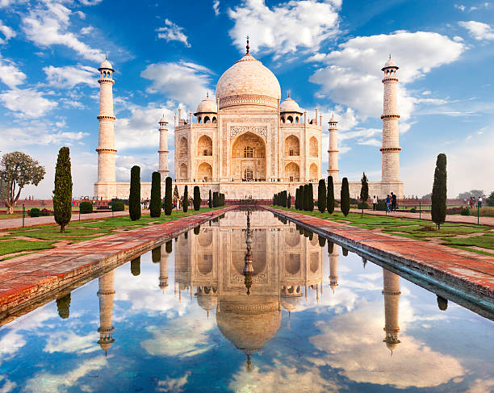
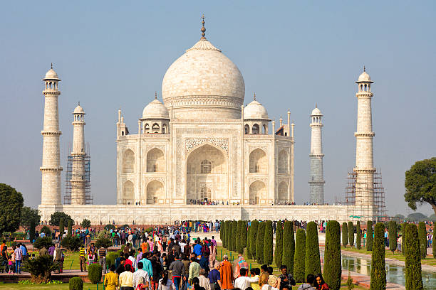
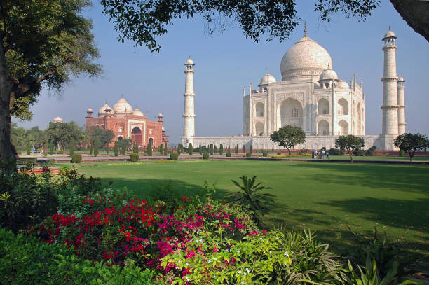
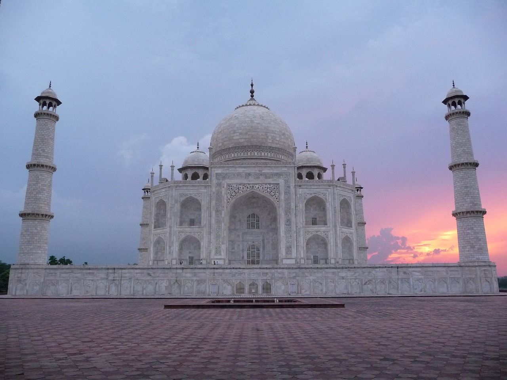
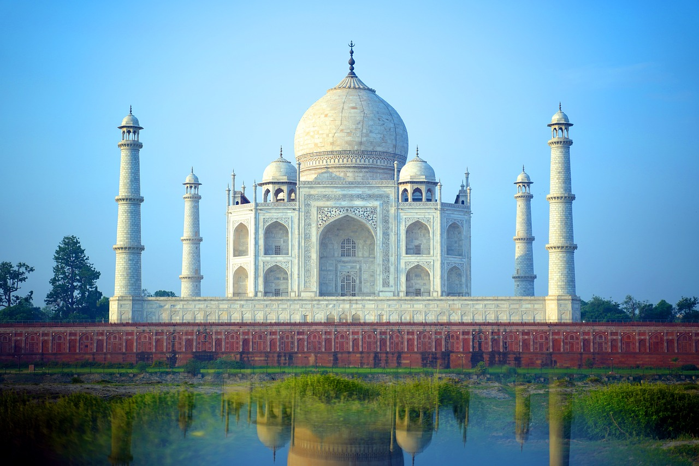
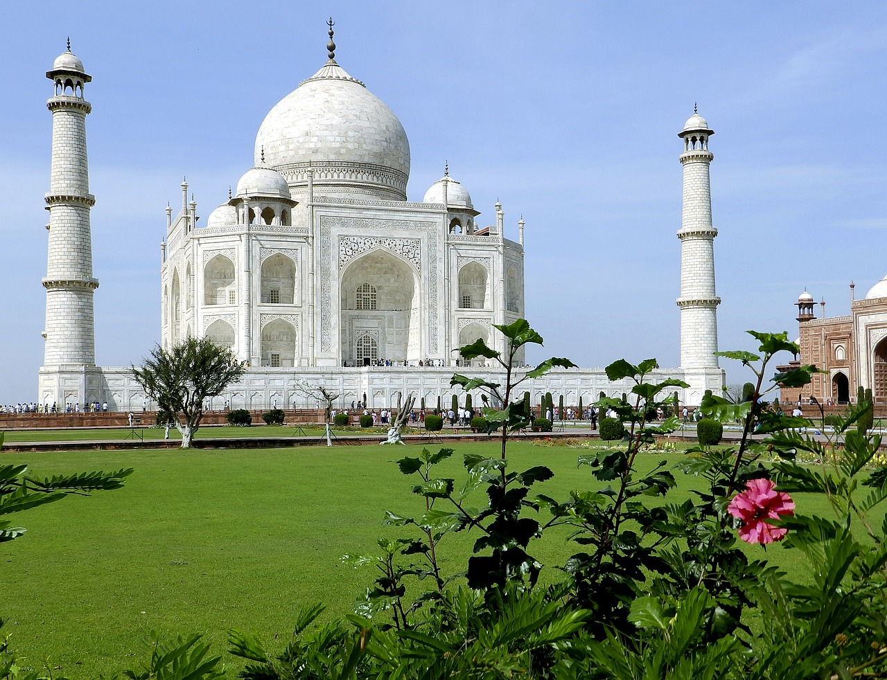
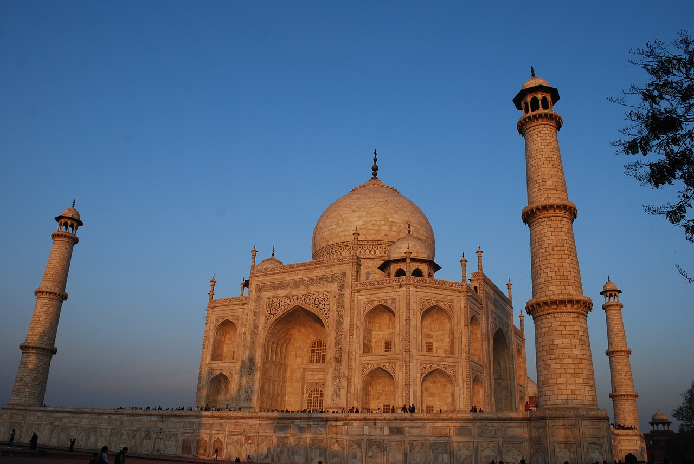
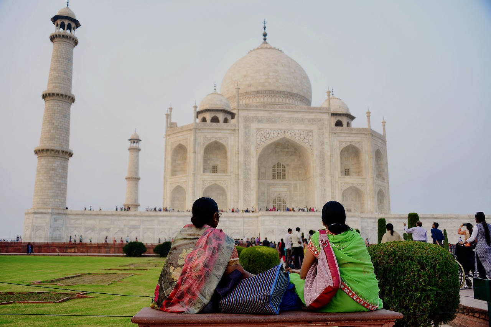

TAJ MAHAL







Le Taj Mahal, l’une des Sept Merveilles du Monde, est à juste trois heures de route de New Delhi, la capitale de l’Inde. C’est l’un des sites touristiques les plus attrayants depuis des années pour les touristes qui viennent visiter le Taj Mahal en premier lieu. Le Taj Mahal, meilleur symbole de l’amour éternel, se dresse sur la rive de la rivière Jamuna à Agra, dans l’État de l’Uttar Pradesh, à 200 km de Delhi. Il fait partie du célèbre circuit touristique du Triangle d’Or de l’Inde.
Le magnifique palais du Taj Mahal, l’une des plus belles merveilles architecturales indienne a été construit par le cinquième empereur moghol Shah Jahan en 1631 en mémoire de sa seconde épouse, Arjumand Banu qui fut plus tard connue sous le nom de Mumtaz Mahal, (Mumtaz Mahal signifiant la “distinguée du Palais”). Le Taj Mahal se dresse comme un conte de fées sur les rives de la rivière Yamuna. Le monument est en réalité une tombe qui contient le corps de Mumtaz Mahal. Il l’a fait construire comme une ode à son amour.

Le Taj, le fameux dôme, reposant sur une immense terrasse de marbre blanc sur une base de grès rouge (57×57 mètres) est flanqué de quatre minarets effilés. Shah Jahan a consulté des experts du Moyen-Orient et de l’Europe, il a planifié son héritage, et vingt mille personnes ont mis plus de vingt-deux ans à le construire.
Des voyages à bas prix sont disponibles pour aller voir le Taj Mahal, qui servait de moyen de défense de la grande douve du Fort Rouge d’Agra Grande, la capitale de l’empire moghol en ce temps.
LA LEGENDE DU TAJ MAHAL
Un amour de conte de fée
La légende parle d’une extraordinaire histoire d’amour entre l'empereur Shah Jahan et une simple « inconnue » prénommée Mumtaz Jahan.
Celon cette légende, ils se seraient rencontrés jeunes et seraient tout de suite tombés amoureux. Le Maharaja ayant des obligations vis-à-vis de sa famille et de son peuple lui promis fidélité secrètement tout en se remettant à ses obligations de souverain.
Son père lui trouva alors une femme belle, intelligente et de bonne famille. Il obéit à son père et épousa cette demoiselle. Cependant, ils ne consommeront jamais le mariage, et Shah Jahan ne rompit pas promesse faîte à Mumtaz Jahan. Son père, déçu de ne pas voir d’héritier naître lors de la première année du mariage demanda à son épouse ce qu’il se passait. Celle-ci lui expliqua alors que Shah Jahan était très gentil avec elle mais qu’elle ne pourra jamais engendrer d’enfant car il refuse d’avoir tout acte intime avec elle.
Le père fou de rage décida de trouver une seconde épouse, encore plus belle, plus riche et plus intelligente. Le Maharaja fou d’amour ne remarquera même pas cette extraordinaire beauté. Encore une fois, il écouta son père et la prendra pour deuxième femme, mais ne consommera jamais le mariage.
A la mort de son père, il put enfin être libre de choisir son épouse. Sans hésitation il épousa sa bien aimé. Leur mariage fut comme un rêve et leur apporta 14 enfants, dont 3 survivent. Mumtaz Mahal mourut en donnant naissance à leur quatorzième enfant, une petite fille. Mais avant de mourir, elle lui fit promettre deux choses : la première est qu'il conserve sa promesse de fidélité et ne se remarie pas, la seconde est de lui édifier un petit mausolée. Shah Jahan, désemparé et dévasté par la mort de sa femme fit alors construire un batîment fantastique. Il voulut que le monde entier sache combien il l’aimait. Il décida donc d’embaucher des architectes et de construire un mausolée digne du paradis.
Quand visiter le Taj Mahal?
Le meilleur moment pour visiter le Taj Mahal est de novembre à février, sinon il peut être insupportablement chaud ou pluvieux. Vous serez en mesure d’obtenir d’excellents rabais hors saison. Le Taj Mahal semble progressivement modifier sa couleur dans la lumière changeante de la journée. Cela vaut la peine de se lever tôt et d’y voir le lever du soleil, qui se révèle majestueusement. Visiter le site dès l’aube vous permettra également d’éviter les foules énormes qui commencent à arriver plus tard dans la matinée.
Se rendre au Taj Mahal
Le Taj Mahal peut être visité lors d’une excursion d’une journée depuis Delhi. Agra est bien relié par train. La gare principale est Agra Cantonment (AGC). Les services Shatabdi Express à grande vitesse fonctionnent depuis Delhi, Varanasi et les villes du Rajasthan.

Belle vue de l'extérieur du Taj Mahal,
Qui habite dans le Taj Mahal?

Personne ne vit dans le Taj Mahal puisque c’est un tombeau : la tombe de l’empereur et de son épouse se trouve dans la chambre funéraire souterraine (la crypte), tandis que les cénotaphes commémoratifs des deux époux sont situés dans la chambre funéraire supérieure. En dehors de la dépouille de Shâh Jahân et Arjumand Bânu Begam, il n’existe aucune autre sépulture dans le Taj Mahal ni aucun habitant régulier ! Tout au plus est-il ouvert pour permettre à des millions de visiteurs d’y entrer chaque année pour prendre quelques photos, contempler sa splendeur et découvrir ses secrets.
Quel est le symbole du Taj Mahal?
Le Taj Mahal est le symbole de l’amour absolu et universel. Amour que l’empereur Shâh Jahân portait à sa femme Arjumand Bânu Begam au point de lui dédier un mausolée dont la construction prendra des années, et qui permettra à l’empereur inconsolable d’atténuer sa peine en perpétuant le souvenir de son épouse défunte. Le Taj Mahal devait permettre à tout visiteur de se rappeler Mumtaz Mahal, une femme qui a donné naissance aux quatorze enfants de l’empereur et qui l’accompagnait pendant ses campagnes militaires, ce qui lui fut sans doute fatal l’année de sa disparition. Symbole d’amour et de dévouement, le Taj Mahal n’est cependant pas toujours reconnu à sa juste valeur, et de nombreux curieux l’admirent sans forcément savoir que c’est un tombeau…
La sécurité au Taj Mahal
Une sécurité stricte est en place au Taj Mahal, et il y a des points de contrôle aux entrées. Lorsque vous venez visiter le Taj Mahal, votre sac sera scanné et fouillé. Les grands sacs ne doivent pas être pris à l’intérieur. Seuls les petits sacs contenant des articles essentiels sont autorisés. Cela comprend un téléphone, une caméra ou un appareil photo et une bouteille d’eau par personne. Vous ne pouvez pas apporter de produits comestibles, de tabac ou de briquets, des articles électriques (chargeurs de téléphone, écouteurs, iPads, lampes), des couteaux ou des trépieds d’appareil photo à l’intérieur. Les téléphones portables sont également interdits pendant les sessions de visite nocturne, bien que les caméras soient toujours autorisées. Une bagagerie est disponible aux portes d’entrée.

Taj Mahal, couchée du soleil

BONNE DECOUVERTE DU TAJ MAHAL!